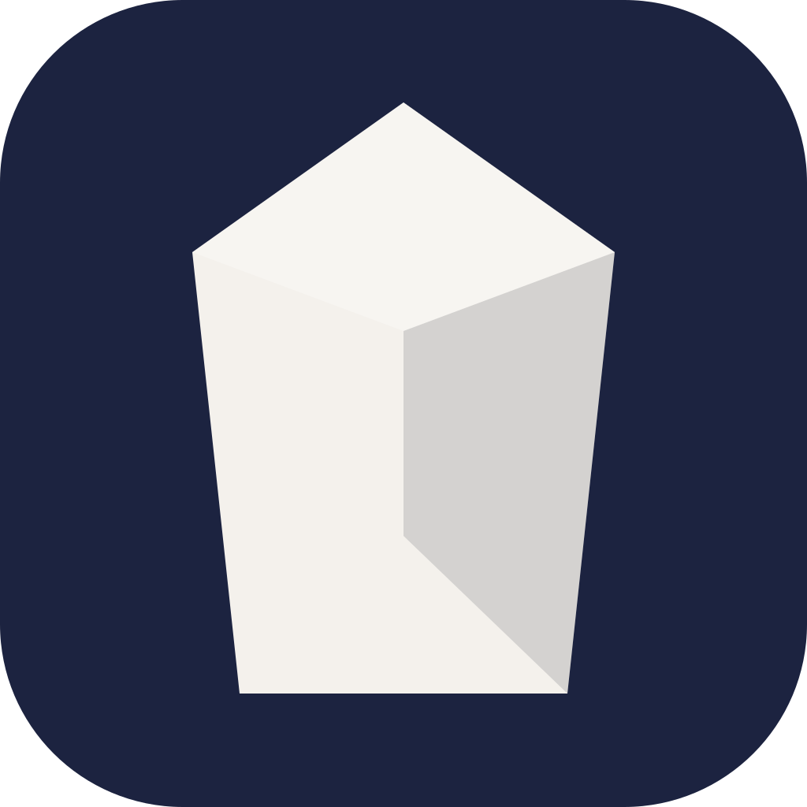

Local AI memory that follows you across every tool.
curl -fsSL https://liozelmalem-star.github.io/slate-releases/install.sh | bash
macOS · Apple Silicon · All downloads · Read the install script
Your whole workspace is a single SQLite file. No account, no sync, no telemetry. It works on a plane.
Slate is an MCP server. What Claude Code learns on Tuesday, Cursor knows on Wednesday.
Nested, typed pages — projects, repos, branches, plans, designs — in a keyboard-first editor.
The in-app agent uses the Claude Code or Gemini CLI you already have. No API keys.
On first launch Slate registers itself as an MCP server with whichever of these it finds installed. No config files to edit, no paths to paste.
recall and remember against your workspace.bash means trusting
whoever wrote it and wherever it is hosted. Slate's installer is short, commented,
and explains every step it takes — read it.
curl doesn't set it — so installing this way just works,
without asking you to turn off a security control. Updates are cryptographically
signed either way.